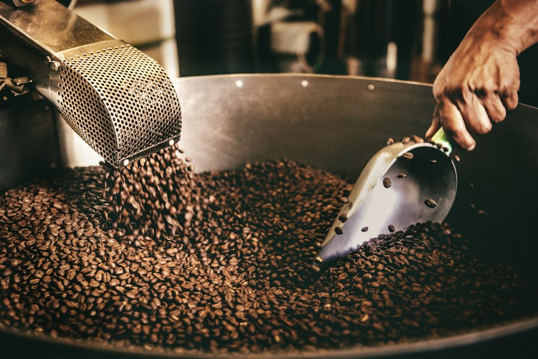
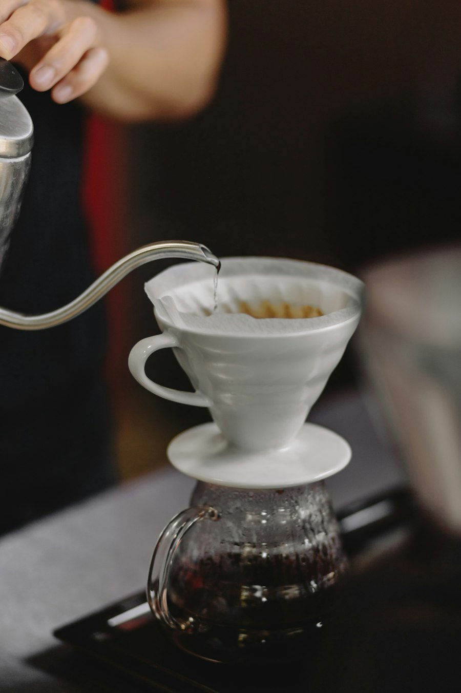
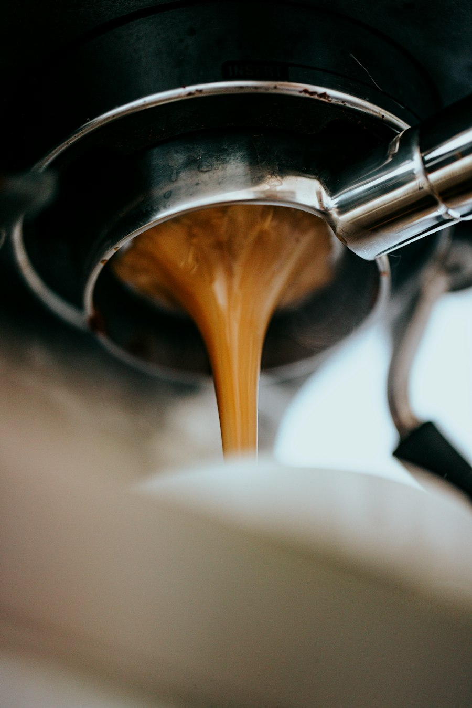
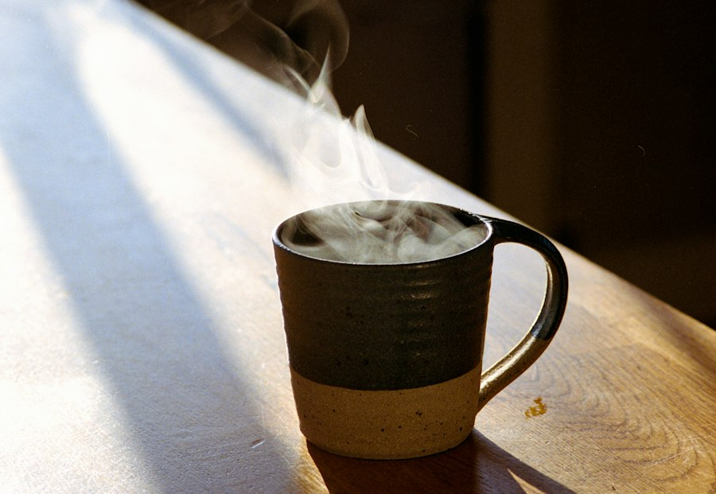

grão
Torrefação
Toca no café · coração
Grão
Café de especialidade torrado devagar. Servido com calma, em grão ou em chávena.
Ementa de links
O teu café ideal
Como o fazes?
E a intensidade?
Pedir este café no WhatsApp
Da torra à chávena



